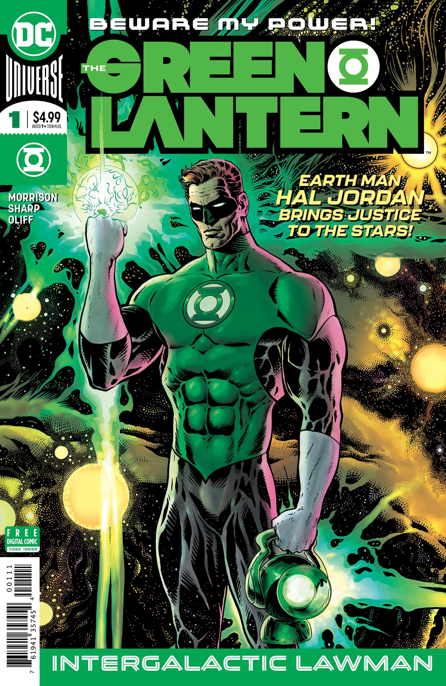

Reading Order
The Green Lantern
Morrison turns Hal Jordan into an intergalactic lawman.

2018 – 2021
Two seasons, joined by the three-issue Blackstars story.
The story
Grant Morrison and Liam Sharp frame Hal Jordan as a cosmic police officer. Strange encounters and investigations build into an intergalactic conspiracy, with the Corps' authority and Hal's judgment under scrutiny. Familiar characters share the page with surreal alien settings.
Blackstars, illustrated by Xermanico, follows the first season's finale and supplies the bridge into Season Two. Skipping it removes a full chapter of the run, even though its title changes.
Good for: readers interested in space detective stories and experimental superhero comics. Knowing who Hal and the Guardians are helps, but there is no requirement to finish the Johns saga first. Secret Origin is a shorter introduction to Hal if you want one.
Read it without missing Blackstars
- First season: The Green Lantern #1–12. Begin with Vol. 1: Intergalactic Lawman (#1–6), then Vol. 2: The Day the Stars Fell.
- The bridge: Green Lantern: Blackstars #1–3, after the first season's #12.
- Second season: The Green Lantern Season Two #1–12. Season Two Vol. 1 contains Blackstars #1–3 and Season Two #1–6, so this edition also covers the bridge. Vol. 2: Ultrawar finishes with #7–12.
Optional side story: The Green Lantern Annual #1 (2019) brings Hal's family into an unusual invasion story. Read it during the first-season period; it is separate from the twenty-seven core chapters above.
The linked DC listings provide issue and collection contents. Editions can overlap: check the contents before adding a separate Blackstars collection.
After this run: Green Lantern (2021) shifts the focus toward John Stewart, Jo Mullein and the Corps. It is another reading path, rather than a third Morrison season.
Key characters

The Green Lantern (2018) #1 — main cover. Liam Sharp (cover art); Steve Oliff (cover colors). Artwork source & details.
Artwork credits (2 images)
Credits refer to the illustrations shown here. Open a record for sources, adaptations and unresolved details. Some artwork and source pages contain story spoilers.
- Morrison Gl — The Green Lantern (2018) #1 — main cover. Liam Sharp (cover art); Steve Oliff (cover colors).
- Hal Jordan — Hal Jordan and the Green Lantern Corps #45 (2018), Tyler Kirkham variant cover, cropped detail. Tyler Kirkham (cover pencils and inks); Arif Prianto (cover colors).